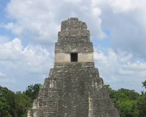
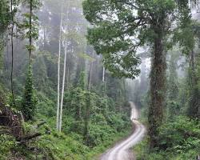
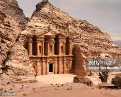

Noticias

Descubrimiento en Tikal, Guatemala
Arqueólogos guatemaltecos han descubierto nuevas tumbas en la antigua ciudad maya de Tikal. Las
tumbas contienen los restos de importantes figuras mayas, y se espera que proporcionen
información valiosa sobre la cultura y la sociedad mayas...

Programa de conservación para orangutanes en Malasia
Se lanza un nuevo programa de conservación para proteger a los orangutanes en el Valle de Danum.
El nuevo programa tiene como objetivo aumentar la población de orangutanes del valle y proteger
su hábitat. El programa incluye iniciativas de educación, investigación y vigilancia...

Nueva ruta de senderismo en Petra
Se abre una nueva ruta de senderismo a Petra. La nueva ruta de senderismo ofrece a los visitantes
la oportunidad de explorar partes de Petra que antes no estaban abiertas al público. La ruta
pasa por varios sitios arqueológicos y ofrece unas vistas impresionantes de la ciudad...

Excavaciones en Angkor Wat, Camboya
Arqueólogos camboyanos han realizado nuevas excavaciones en el complejo de Angkor Wat que han
revelado detalles de la vida cotidiana de las personas que vivieron allí hace siglos. Las
excavaciones han descubierto viviendas, mercados y otros edificios que dan una idea de cómo era
la vida en Angkor Wat durante su apogeo...